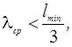
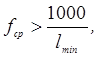
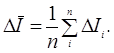
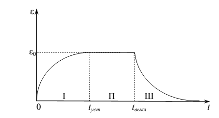

6.2 Статистический метод расчета звукового поля в помещении. Ревеберация
Диффузное
звуковое поле и его основные характеристики
Условие применимости методов статистической акустики может быть записано в виде:

или, что то же самое:

где
lmin – наименьший линейный
размер помещения, fср и
λср – средняя частота
источника звука и, соответственно, средняя длина звуковой волны. При выполнении
этого условия звуковое поле в помещении приближается по своим свойствам к
диффузному.
Если
помещение не содержит фокусирующих сводов, его размеры значительно больше, чем
средняя длина звуковой волны, а поверхности помещения обладают небольшими
коэффициентами звукопоглощения, то через произвольный элемент объема помещения при непрерывной
работе источника звука в каждый момент времени будет проходить большое
количество прямых и отраженных звуковых волн. В результате этого средняя
плотность звуковой энергии по всему помещению будет одинакова (поле
однородное), а все направления потоков энергии этих волн равновероятны
(поле изотропное). Однородное и
изотропное звуковое поле называется диффузным. Следует отметить, что в
диффузном поле все собственные колебания некогерентны, поэтому в нем отсутствуют
явления интерференции.
Диффузное
поле представляет собой некоторый идеализированный объект (модель). Реальные
звуковые поля могут по своим свойствам только приближенно соответствовать этой
модели. Мерой количественной оценки этого соответствия является индекс
диффузности поля. Эта величина может быть определена экспериментально. Для этого
в помещении возбуждают звуковой сигнал переменной частоты и в исследуемой точке
помещают микрофон с острой характеристикой направленности. Сигналы, принятые
микрофоном при его ориентации в пределах изменения телесного угла от 0 до 4π,
усредняют по всем направлениям. Средняя интенсивность звука
равна
где
Ii – интенсивность,
измеренная по данному направлению, n
– число отдельных измерений. Абсолютное отклонение от среднего
значения:
а
среднее абсолютное отклонение:

Относительное
отклонение интенсивности, усредненное по всем направлениям,
равно:
Индекс
диффузности звукового поля
в помещении равен
где m0 – относительное отклонение
интенсивности от среднего, измеренное в заглушенной камере, то есть в
помещении с поверхностями, полностью поглощающими звук. При полной заглушенности
помещения (m = m0) индекс диффузности равен
нулю. Наоборот, если m = 0, то индекс
диффузности равен единице и поле абсолютно диффузное.
Проведенные
измерения дают для большего числа помещений среднее значение индекса диффузности
примерно 0,6-0,7. С увеличением объема помещения (V>
Решение
задачи о расчете плотности энергии звукового поля в помещении
Основной
характеристикой диффузного звукового поля является плотность энергии звуковых колебаний
ε, численно равная энергии колебаний в единице объема. Вместо интенсивности
звука для акустического поля в помещении используют поток звуковой мощности,
падающей на единицу площади во всех направлениях полупространства. Эту величину
называют удельной мощностью облучения границ
I. Можно показать, что в диффузном
поле эта величина связана со скоростью звука c и плотностью звуковой энергии ε
соотношением:
С
точки зрения статистической акустики основными характеристиками помещения
являются:
-
объем V,
м3;
-
общая площадь всех поверхностей помещения Sобщ,
м2;
-
αi – коэффициент
звукопоглощения каждой из поверхностей (зависит от физической природы покрытия и
от частоты звука);
- Ai = αiSi – эквивалентная (или эффективная) площадь звукопоглощения данной
поверхности, м2. Эта величина численно равна площади поверхности
идеального звукопоглотителя, которая поглощала бы такое же количество звуковой
энергии, что и данная поверхность;
-
Aобщ= ΣAi =ΣαiSi –
эквивалентная площадь звукопоглощения всех поверхностей
помещения;
-
αср = Aобщ/ Sобщ- средний коэффициент
звукопоглощения поверхностей помещения.
Рассмотрим
случай, когда в тихом помещении в некоторый момент времени, который мы примем за
начальный (t = 0), начинает работать
источник звука постоянной мощности W.
Если процессы излучения и поглощения звука происходят непрерывно, то изменение
плотности звуковой энергии в помещении описывается дифференциальным
уравнением
где
W – мощность звуковых колебаний,
излучаемая источником звука, а IAобщ- мощность,
поглощаемая поверхностями помещения.
Так
как в диффузном поле удельная мощность облучения границ I связана с ε, то
С учетом этого уравнение изменения плотности звуковой энергии можно записать в виде:
Решение данного дифференциального уравнения имеет следующий вид:
Следует отметить, что данное выражение, полученное американским физиком Уильямом Сэбином, справедливо для помещений с высоким индексом диффузности, в которых в процессе изменения плотности звуковой энергии наблюдается достаточное число отражений звуковых волн, обеспечивающее равномерное поглощение энергии. Если же средний коэффициент звукопоглощения в помещении близок к 1, то средняя плотность звуковой энергии меняется небольшими скачками при каждом отражении. Более общее выражение, учитывающее потери энергии при каждом отражении, было получено Карлом Эйрингом:
Эта формула характеризует процесс установления звукового поля (нарастания плотности звуковой энергии) в помещении. Этот процесс будет происходить до тех пор, пока мощность источника звука W не станет равна мощности потерь звуковой энергии, обусловленной поглощением звука поверхностями помещения IAобщ. При этом плотность энергии звуковых колебаний:
С
этого момента (t=tуст) до
момента прекращения действия источника звука (t=tвыкл) плотность звуковой
энергии в помещении остается постоянной и равной ε0. Такой режим
называется стационарным.
В стационарном режиме уровень звука в децибелах равен
где
LW – уровень мощности
источника в децибелах.
После прекращения действия источника звука звуковое поле в помещении постепенно затухает. Этот процесс называется реверберацией. Дифференциальное уравнение изменения звукового поля в момент выключения источника (W = 0) принимает вид:
Решение этого уравнения, описывающее постепенное уменьшение плотности звуковой энергии (с учетом первого и последующих отражений звуковых волн от поверхностей помещения) имеет вид:
На
рисунке изображен график временной зависимости плотности энергии звуковых
колебаний в помещении.
Область
I соответствует процессу установления звукового поля, область П – стационарному
режиму, область Ш – процессу реверберации.

В
качестве основной характеристики процесса затухания звукового поля в помещении
принято время, в течение которого плотность звуковой энергии после выключения
источника уменьшается в 106 раз (или на 60 дБ). Эта величина
называется временем реверберации (стандартным
временем реверберации) помещения T, с.
По
определению:
Отсюда
для времени реверберации получаем:
Данная
формула получила название формулы
Эйринга.
При
небольших коэффициентах звукопоглощения (α<0,2) можно использовать
приближенное выражение
которое
называется формулой Сэбина.
Время
реверберации как характеристика акустических качеств
помещения
Из
формулы Сэбина следует, что время реверберации зависит от отношения объема
помещения к эквивалентной площади звукопоглощения в этом
помещении.
В
помещениях большого объема с поверхностями, обладающими невысокими
коэффициентами звукопоглощения, время реверберации велико. Такие помещения
называются гулкими. Небольшие помещения с
хорошо поглощающими звук поверхностями характеризуются малым временем
реверберации и называются заглушенными. Таким образом, изменяя
отношение Aобщ к V, можно построить зал с тем или иным
временем реверберации.
Выбор времени реверберации во многом определяется субъективным восприятием процессов нарастания и спадания уровня звука. Например, если время реверберации большое, то остаточный звук может перекрыть последующие элементы звучания, что ухудшает разборчивость речи. При малом времени реверберации звуковой сигнал воспринимается четко, но без своеобразной фоновой окраски, а это обедняет звучание музыки и снижает ее эмоциональное воздействие. Ясно, что оптимальное значение времени реверберации зависит от назначения залов.
Послушаем:
Фортепиано (малое время реверберации)
Фортепиано (время реверберации увеличено)
Рекомендуемые
значения времени реверберации помещений различного назначения (объемом до 2000 м3)
приведены в таблице:
.
Оптимальные значения времени реверберации
|
Тип
помещения |
Tопт,с | |||
|
Низкие частоты (f<200
Гц) |
Средние частоты (200≤f≤1500Гц) |
Высокие частоты (f>1500Гц) | ||
|
Речевые
(классы, аудитории,лекционные залы) |
0,3
– 0,5 |
0,4
– 0,5 |
0,3
– 0,5 | |
|
Музыкальные
студии и залы |
1,6
– 2,0 |
1,65
– 1,8 |
0,5
– 1,0 | |
|
Помещения
общего назначения |
0,5
– 1,0 |
0,8
– 1,0 |
0,5
– 1,0 | |
На рисунке показана зависимость рекомендуемых значений времени реверберации от объема помещения.
Рекомендуемое время реверберации для залов различного назначения в диапазоне частот от 500 до 2000 Гц: 1 – лекционные аудитории, пассажирские помещения вокзалов; 2 – драматические театры, залы многоцелевого назначения средней вместимости, кинотеатры; 3 – театры оперы и балета, концертные залы